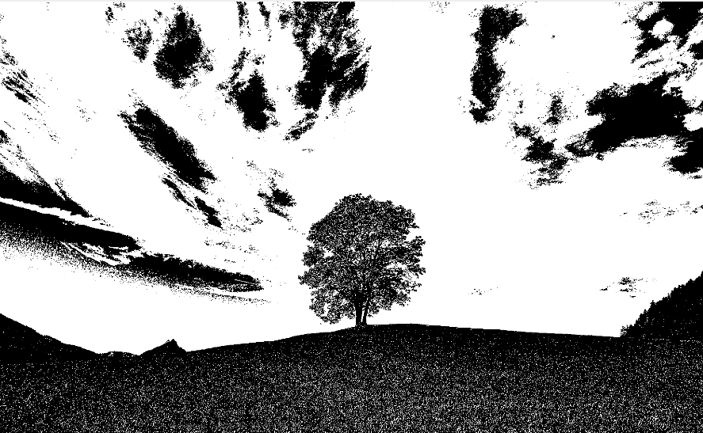
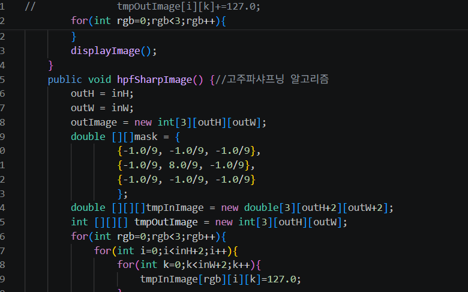
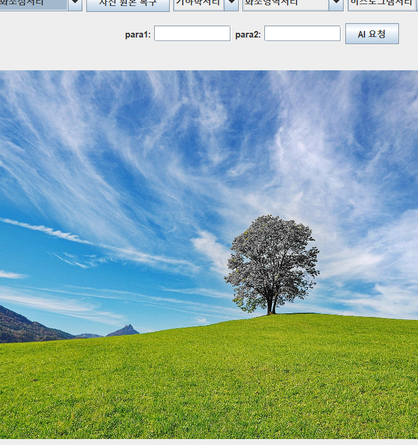

INTRODUCTION
나를 소개합니다
직접 이미지 처리 알고리즘을 구현하고 결과를 비교하며 영상처리 기술을 실제 산업 현장의 배관 설비 관리에 접목하고 싶다는 목표가 생겼습니다.
프로젝트 기획 및 이미지 처리 실험
대형 플랜트 배관공장 예방 유지관리 시스템
대형 플랜트 배관 내부의 이상 상태를 사전에 파악하기 위한 내시경 영상 분석 기반 예방 유지관리 시스템을 기획했습니다.
구현 및 실험 내용
Java를 활용한 이미지 처리 프로그램을 제작하고, 나무와 풍경이 담긴 샘플 사진으로 영상처리 실험을 진행했습니다. 흑백 변환, 밝기 조절, 블러링, 샤프닝 등 다양한 이미지 처리 알고리즘을 적용하고 결과를 비교했습니다.
특히 고주파 샤프닝과 소벨·프리윗 등의 윤곽 검출 알고리즘을 실험하며 이미지의 경계와 세부적인 특징을 강조하는 방법을 익혔습니다.
현재 진행 상황 및 향후 목표
현재까지 확인되는 작업은 샘플 사진을 이용한 이미지 처리 실험입니다. 배관 내시경 영상 분석과 폐색률 산출은 아직 구현된 기능이 아니라 앞으로의 목표입니다. 향후 해당 기술을 배관 내시경 영상에 적용해 내부 이물질과 스케일 침적 영역을 구분하고 폐색률을 산출하고자 합니다.
앞으로 초음파 두께, 유량, 압력 데이터를 결합해 배관의 위험도를 평가하고 예방 정비 시기를 제안하는 시스템으로 확장할 계획입니다.


